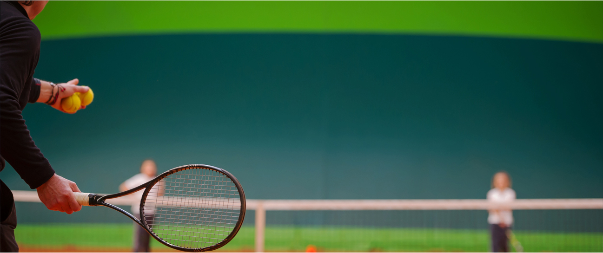

BXH tennis 12/12: Hoàng Nam vỡ mộng, Hoàng Thiên “chạm đỉnh”
Lý Hoàng Nam tụt tới 40 bậc trên bảng xếp hạng ATP
Tennis 24/7: Thầy cũ Federer tin Murray vô địch Úc mở rộng 2017

Vũ Thị Trang giành cú đúp vô địch ở giải Bangladesh mở rộng 2016
Tennis: Murray được đề cử Hiệp sĩ, ngang Sir Alex của bóng đá

Quần vợt Đà Nẵng giành 1 HCV, 2 HCB tại giải các tay vợt xuất sắc toàn quốc

Juan Martin del Potro: Chuyện cổ tích năm 2016

Lý Hoàng Nam vô địch giải các tay vợt xuất sấc toàn quốc 2016
Xem tiếp